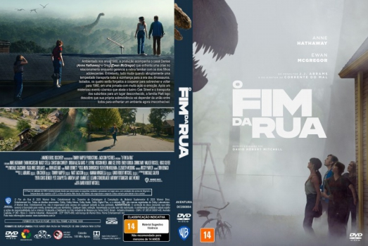

![link to O Fim da Rua [Autorado] on Rotten Tomatoes](../img/tomatoes.png)
![link to O Fim da Rua [Autorado] on TheMovieDb](../img/themoviedb.png)

Outro Título:The End of Oak Street
País:United States, 100 minutos
Idiomas falados:Inglês, Português
Gênero(s):Sci-Fi, Mistério, Suspense
Diretor(s):David Robert Mitchell
Escritor(es):David Robert Mitchell
Codec:MPEG-2 (DVD)
Número: 5962


Certificado:14
Sinopse:
Ambientado nos anos 1980, a produção acompanha o casal Denise (Anne Hathaway) e Greg (Ewan McGregor) que enfrenta uma crise no relacionamento enquanto gerencia a rotina familiar com os dois filhos adolescentes. Entretanto, tudo muda quando abruptamente uma tempestade transporta toda a vizinhança para a era dos dinossauros. Isolados, os quatro serão forçados a cooperar para sobreviver e voltar para 1980, em uma jornada com muita ação e emoção. Após um misterioso evento cósmico que abala o bairro Oak Street e o transporta dos subúrbios para um lugar desconhecido, a família Platt logo descobre que sua própria sobrevivência vai depender da união entre todos para enfrentar um ambiente agora irreconhecível.
Elenco:


Tipo de mídia: DVD5,
Legendas: Português, Sem Legendas
Alugado: Não
Tela: Anamorphic Widescreen